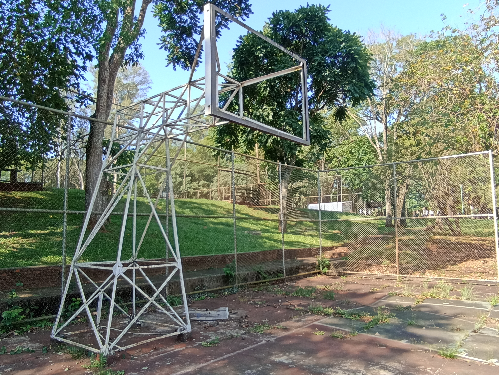

O empedimento
Não se sabe ao certo em qual dia isso aconteceu. O que sabemos, é que o ocorrido aconteceu em meados de 2022. Estudantes do IFPR, e para ser mais específico, do campus de Foz do Iguaçu, estavam prestes a jogar a forma primitiva do Basquete 2 (mais conhecida como basquete). Ambos ficaram surpresos ao perceber que alguém (ou algo) havia quebrado a tabela. Nesse momento, a maioria teria desistido de jogar, mas esse ato, que tinha como inteção coibir o esporte, acabou dando origem ao esporte mais revolucionário da história.
Ascensão
Era plenamente possível desistir naquele momento. No entanto, foi percebido que o suporte da tabela ainda possuía um buraco de ferro. A lógica era praticamente a mesma de uma cesta, mas mais funda, e com mais margem para jogadas diversificadas. Desse imprevisto, surgiu um novo esporte.
